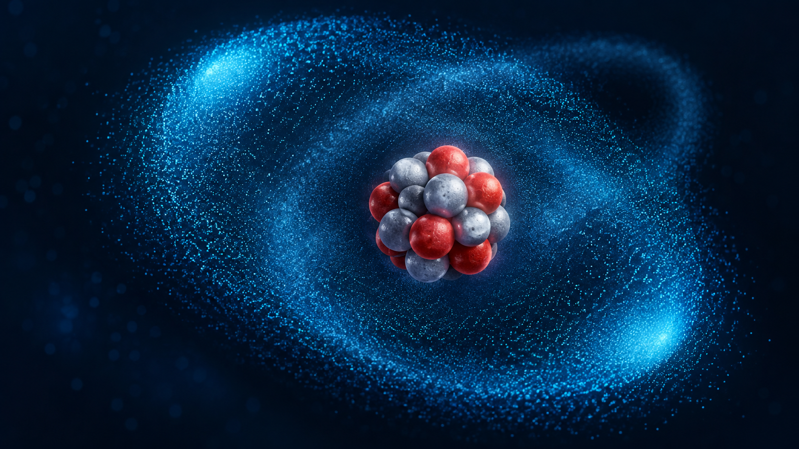
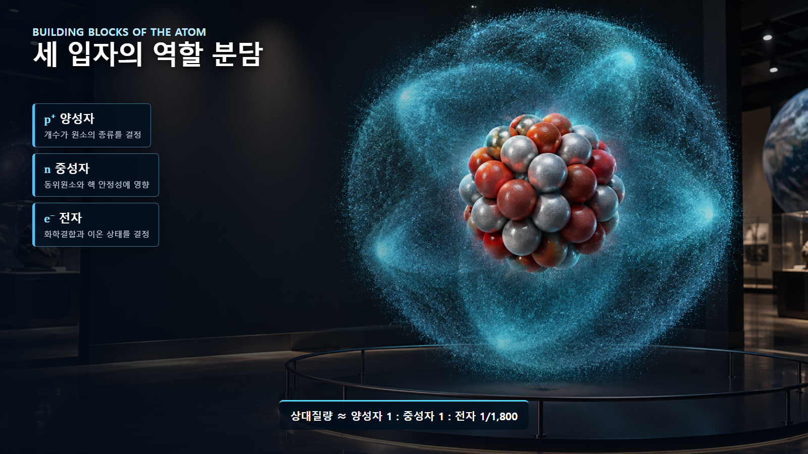
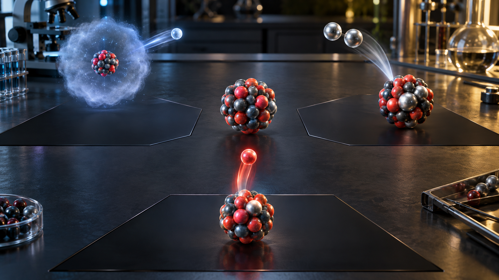

원자와 원자핵의 기초 · 003
양성자·중성자·전자의 역할
원소의 정체성, 동위원소와 화학적 성질을 나누는 세 입자

핵심 개념
양성자는 원소의 종류를, 중성자는 동위원소와 핵 안정성을, 전자는 화학결합과 이온 형성을 주로 결정합니다.
양성자가 정하는 원소의 정체성
양성자는 양전하를 띠며 원자핵을 구성합니다. 원자핵의 양성자 수가 원자번호이며 원소의 종류를 결정합니다. 양성자가 1개이면 수소, 2개이면 헬륨, 6개이면 탄소입니다.

중성자가 만드는 핵종의 차이
중성자는 전하가 없고 질량은 양성자와 비슷합니다. 탄소-12와 탄소-14는 모두 양성자가 6개지만 중성자가 각각 6개와 8개입니다. 화학적으로는 모두 탄소지만 핵의 안정성과 방사성 성질은 달라집니다.
| 입자 | 전하 | 상대질량 | 주된 역할 |
|---|---|---|---|
| 양성자 | +1 | 약 1 | 원소의 종류 결정 |
| 중성자 | 0 | 약 1 | 동위원소와 핵 안정성 |
| 전자 | −1 | 약 1/1,800 | 화학결합과 이온 형성 |
전자가 좌우하는 화학적 성질
전자는 음전하를 띠고 원자핵 주변에 확률분포로 존재합니다. 질량은 양성자의 약 1/1,800에 불과하지만, 원자끼리 결합하고 전류가 흐르는 방식은 전자배치가 결정합니다. 전자를 잃거나 얻으면 원소는 그대로인 채 이온이 됩니다.

탄소 원자의 역할 분담
탄소-12에서 전자 하나를 떼면 탄소 이온이 되고, 중성자 두 개를 더하면 탄소-14가 됩니다. 그러나 양성자 하나를 더하면 원자번호 7인 질소로 바뀝니다. 같은 원자 안의 입자라도 바뀌었을 때 나타나는 결과가 서로 다릅니다.